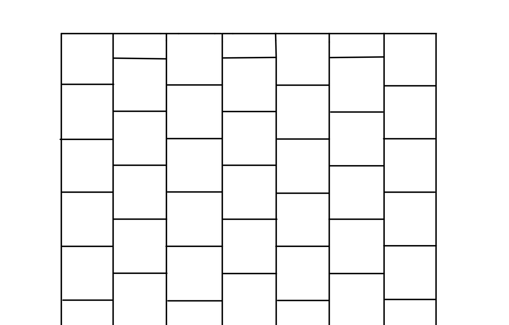
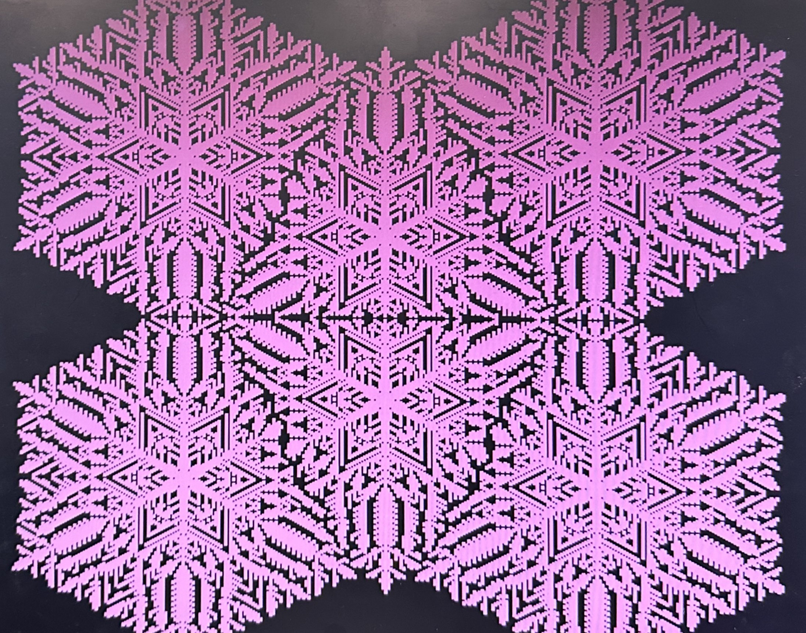
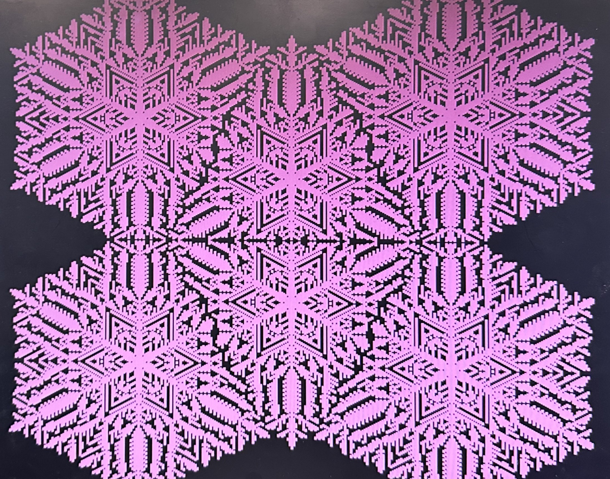

Snowflake Cellular Automaton
Katherine Zhou, Madeleine Lee, Eshita Sangani

Our final project is a snowflake cellular automaton using Reiter's model visualized on a VGA screen.
Our project uses Reiter's model for snowflake diffusion to calculate the generation of snowflakes based on three main parameters. This computation is done on the HPS of the DE1-SOC board, and the output is then plotted on the VGA screen using the FPGA. Using the HPS to compute the model allowed for simpler synchronization between the user interface (which can change the parameters) and the computations while using the FPGA to plot the snowflake allowed us to see a significant speedup in our overall program. The final result allows us to view the evolution of snowflakes over time across changing environments.
We were inspired by Yan Huck's cellular automaton project and simulation. We sought to expand on this web-based simulation to make a larger, faster, and more interactive simulation using the computational power of the DE1-SoC board.
Reiter's model is a cellular automaton that models the growth of snowflakes based on three parameters. Because snowflakes exhibit hexagonal symmetry, the model tessellates the plane with regular hexagons. Each hexagon is referred to as a cell, and each cell has a state variable, s, representing whether or not that cell is frozen.
The model utilizes three parameters, α, β, and γ, to simulate the environment in which the snowflake is growing. α is the diffusion constant, and can be best understood as representing how a cell distributes water to its neighboring cells. β is the initial background level of water vapor in the environment. γ is the constant level of water vapor that gets added to the system. Additional variables, u and v, represent the amount of water vapor in each cell used in diffusion and not used in diffusion respectively. The sum of u and v is the total amount of water in the cell, which is the state variable s. Once s is greater than or equal to 1, the cell is frozen. The neighboring cells of a frozen cell are boundary cells, and the union of frozen and boundary cells is the set of receptive cells.
To initialize the plane, a seed cell is set to be frozen (s=1), and every other cell has its u value set to β. This seed cell is where the snowflake will start to grow.
After initialization, each iteration consists of the following steps:
Re-assign each cell's u and v values depending on whether the cell is receptive or not:
Receptive: u = 0, v = s Not receptive: u = s, v = 0
For receptive cells: v = v + γ
For all cells: u = u + α/2(u_bar - u) where u_bar = avg u of neighboring cells
For all cells: s = u + v
This algorithm uses a Laplace approximation to calculate the diffusion using the u values, while the variable v allows us to track the added water from the environment into receptive cells.
Although the model uses a hexagonal plane, we felt that using hexagons on the VGA display would sacrifice resolution, as the hexagons in our initial plan were at their widest point ten pixels wide. Our project mimics the hexagonal grid by using offset columns; every other column is offset by half of a cell. We chose our cells to be 2x2 pixels, so every other column was offset by one cell. This allows for each cell to still have six neighboring cells without sacrificing any resolution of our generated image. An example of the grid is shown below.
When we originally decided how to split the workload between hardware (the FPGA) and software (the ARM), we thought it would be best to use the FPGA to perform the bulk of the computations since in prior labs, we used the FPGA to perform similar mathematical work. Then, we would provide some interface between the FPGA and the ARM to send the relevant data to the ARM to plot on the VGA screen. However, we found that implementing the many loops required by the algorithm using the FPGA was more complex than we originally anticipated. The complexity of data storage made it easier for us to implement the algorithm in C to run on the ARM instead and use the FPGA to accelerate the VGA plotting.
We used an iterative design approach by first starting with a Python model, then a fully C model, and finally using the FPGA to draw to the VGA using a shared SRAM block. A high-level diagram of our final design is shown in the figure below.

We started our project by writing a Python model. This model is included in our Github repository here. This model allowed us to gain a deeper understanding of the algorithm before diving into lower-level implementations like C and Verilog. Our Python model uses the Cell class shown in the code snippet below:
We use a 2D array to store our Cell objects, allowing us to easily index into the grid. A helper function get_neighbors() returns an array of Cell objects for all neighbors of any Cell's coordinate. This helps us to calculate diffusion. We have an initialization loop and an iteration function one_iter() that updates all the Cell objects in the grid for one iteration of the algorithm as described in Section 2.1. Finally, we have an update_frozen_cells() function that helps us plot the frozen cells for each iteration using matplotlib’s FuncAnimation class. The GIF below shows the output of our Python model.
Notice that this scheme does not attempt to offset columns in the grid as described in Section 2.2, resulting in a skewed visualization of the snowflake.
We used the Python model to explore the outputs for different numbers of neighbors by changing the get_neighbors() function. Since this was the beginning stage of the project, we were unsure how to tile our grid to allow for hexagonal behavior. Thus, we wanted to test an 8-neighbor scheme, as that would allow us to use a rectangular grid outright with no tiling. Ultimately, we decided that the 8-neighbor scheme did not produce the desired “snowflake-esque” patterns that the 6-neighbor scheme shown above did, so we moved forward with figuring out our grid design as explained in Sections 2.2 and 3.1. The 8-neighbor results are shown in the GIF below.
After writing and testing the Python simulation, we did the same simulation in C on the HPS. The model is in our Github repository here. We use a struct, instead of a class as we did in Python, to store the variables associated with each cell. The grid is stored as a 2D array of pointers to Cell structs.
Our get_num_neighbors() function here takes into account the grid design with offset columns mentioned previously. It takes in three arguments, an array of Cell struct pointers, and the x and y coordinates of the cell we are trying to find the neighbors of. The function adds the neighbors to the array that was passed in and returns the number of neighbors the cell has. It first finds the top and bottom neighbor of the given cell, which only depends on whether or not the y coordinate of the cell is the first or last row of our grid, as there is no top neighbor if the cell is in the first row, and no bottom neighbor if the cell is in the last row. All other neighbors are determined by whether the cell is in an even or odd column.
In general, any cell will have two neighbors to its right and two neighbors to its left. Given a cell at coordinate (x, y), its left side neighbors are (x-1, y-1) and (x-1, y), and its right side neighbors are (x+1, y-1), and (x+1, y). Similarly, if a cell is in an odd column, its left side neighbors are (x-1, y) and (x-1, y+1), and its right side neighbors are (x+1, y) and (x+1, y+1). We obtained these coordinates by drawing out a portion of the grid to find the pattern in the neighbors of a cell.
The exception to these rules is when the cell is at the border of the grid, as the leftmost column will not have left-side neighbors and the rightmost column will not have right-side neighbors. The grid and the cell coordinates are illustrated in the figure below. Note that the neighbors are calculated the way they are because of the way we set up our grid. If the even columns were the ones offset by half a cell, then the way of finding left and right neighbors for odd odd columns described above would be for even columns, and even columns would be for odd columns.
Our one_iter()function updates our grid by performing the calculations outlined in Reiter’s model. It determines the receptive sites of the grid, performs the diffusion and modifies the cell values, and then updates the boundary cells by checking the neighbors of the non-receptive cells. If its neighbor is frozen, then that cell will be updated to be receptive, making it a boundary cell.
Our run_snow() function loops through the grid of cells and draws them to the VGA screen. It first must determine the color to draw based on whether the cell is frozen or not. It also takes into account if the cell is in an even or odd column, as the coordinates to draw would be different. The mapping of cell coordinates to VGA pixels is shown below.
The drawing is done using VGA_box, which is one of the given defined VGA graphics routines.
In the main() function, we run a for loop that calls one_iter() and run_snow(). We chose a for loop instead of a while loop to prevent the snowflake from growing back in on itself once it hits the grid boundary. Some snowflakes and their parameters are shown below.

We ran into a few bugs while writing the algorithm. Our initial get_num_neighbors() function was not obtaining the correct neighbors, nor was it obtaining the correct number of neighbors. While debugging, we found that our cases were not exclusive, so it was over-counting. This prompted us to rethink the function, and we then came up with the scheme mentioned above.
We used the FPGA to accelerate writing to the VGA. This was done using the GPU with FAST display from the SRAM example linked here. We used a shared SRAM between the FPGA and the HPS to transfer drawing data from the HPS to the FPGA to then output to the VGA display. To do this, we used the function VGA_disc() from the Dancing Boid’s final project linked here, with r=0. The function takes in a coordinate and then writes to the shared SRAM at the appropriate address. Then, the FPGA reads this data and plots it to the VGA.
The majority of the rest of the C code stayed the same, although some optimizations were made. Our original C simulation draws every cell on the screen, regardless of whether or not it is frozen, which is a waste of time as only the frozen cells need to be drawn. We modified the code to accommodate this optimization.
During our design process, we attempted to compute the algorithm using the FPGA, using the HPS to plot. However, we quickly ran into synchronization and general logic issues. We struggled with synchronization with data transfers between the FPGA and the HPS because we started by using PIO ports. This was remedied by using a dual-port SRAM that could be read and written by both the FPGA and the HPS, allowing for a single synchronization signal to be set by the HPS, and then unset as an acknowledgment by the FPGA.
Regarding the logic implementation itself, we originally tried to model our state machine after the drum synthesis state machine from Lab 3. However, after further thought and testing, we realized that the snowflake algorithm is much more complex than the drum. This can be seen in the differences in complexities between each respective C implementation. The drum algorithm was condensed to around 5 lines of code, with one loop through the grid per iteration, while our snowflake algorithm consisted of multiple loops per iteration, as well as multiple helper functions as described above in Section 3.1. Furthermore,
Although we did not end up implementing the algorithm on the FPGA for this project, further reflections on how we could theoretically move computation to the FPGA if done over are discussed in Section 5.1.
Our project uses two user interfaces, a command line interface and a mouse interface. The command line interface includes the following features:
Change each of the three parameters used in Reiter's model (α, β, γ), with each change taking place immediately as the snowflake continues to grow. This simulates the changes in the environment as the snowflake falls.
Generate a new snowflake with the current parameters by entering the center coordinate of the snowflake.
Clearing the VGA screen which resets the parameters back to our hard-coded initial conditions.
Pause and play the simulation. This allows the user to see exactly when the parameters have been changed by pausing the simulation before changing parameters and then resuming again afterward.
Change the color of the snowflake. This is just for fun!
Print the time that it takes for one iteration to be calculated and drawn. Timing is discussed further in the results section.
Here are some of our favorite snowflakes that we generated:
 

The mouse interface allows the user to start generating a new snowflake with the current parameters by clicking on the desired center coordinate on the screen.
Our simulation demonstrated a 43.74% decrease in simulation time when using the FPGA to draw over using the HPS to draw. The speed of the simulation is determined by the time it takes to compute every value in the grid and visualize it on the VGA screen, as well as how many frozen cells there are. Thus, the size of the grid also plays a role in the overall time. For our test, we used the entire screen as our grid. We found that it took 763.39 us when everything was done in C, and 429.52 us when drawing was done using the FPGA. The times were taken from the beginning of the simulation when not many cells were frozen.
Our simulation was very user-friendly through an intuitive command line and mouse interface. Our demo video is below!
Overall, we were successful in implementing our visualization of snowflake growth. Our final project significantly expands the functionality of the model we found online by allowing the user to dynamically change the input parameters to model combinational snowflake formations and patterns. It also allows for larger snowflakes as our animation uses the full VGA screen resulting in a 320x240 grid, whereas the online version primarily modeled snowflakes smaller than 100x100. Even at these larger dimensions, our snowflake can animate more quickly than the one online and has the added functionality of computing several snowflakes at once. We also included the ability to add new seed cells to grow new snowflakes at different times. These added features allow the user to explore interactions between snowflakes with different parameters and at different stages of growth.
If we were to do this project again, we would attempt a different design scheme to compute the algorithm on the FPGA. We could have used a similar shared SRAM situation to share our cell state data with the HPS. This would allow us to save all of the cell data in this SRAM. We could then structure our state machine to more closely mimic the multiple loops in the C implementation. This would require much more logic than our previous implementation but is likely necessary given the complexity of the algorithm.
Our snowflake generator expands and improves Van Huck’s web-based version. We drew from his resources and report extensively to understand the math behind snowflake growth. However, all Python and C code that we used to implement the algorithm is exclusively ours.
The Quartus project that we compiled and flashed to the FPGA to write to the VGA screen is entirely from the GPU with FAST display from SRAM example from class. We did not edit this example at all.
The C code that we used to communicate with the FPGA was from the Dancing Boids final project from last year.
The group approves this report for inclusion on the course website.
The group approves the video for inclusion on the course Youtube channel.
Due to the collaborative nature of this course, we often met in lab together as a group and worked on the project at the same time.
Van Huck's Cellular Automaton for Snow Crystal Growth: https://itp.uni-frankfurt.de/~gros/StudentProjects/Projects_2020/projekt_yan_huck/
A local cellular model for snow crystal growth: http://www.patarnott.com/pdf/SnowCrystalGrowth.pdf
Dancing Boids: https://people.ece.cornell.edu/land/courses/ece5760/FinalProjects/s2023/yw575_mk2592_rc627/yw575_mk2592_rc627/index.html
GPU with FAST display from SRAM: https://people.ece.cornell.edu/land/courses/ece5760/DE1_SOC/HPS_peripherials/Examples_version_18.html